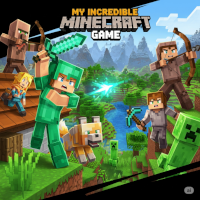

Meu Jogo Incrível - Guia Rápido 🎮

Bem-vindo ao guia rápido para dominar os segredos de "Meu Jogo Incrível"! Prepare-se para a aventura © 2025.
Comandos Essenciais de Movimentação
- Mover para cima: Tecla / Console:
- Mover para Baixo: Tecla / Console:
- Mover para Esquerda: Tecla / Console:
- Mover para Direita: Tecla / Console:
- Pular / Confirmar: Tecla ou / Console: (X)
- Ação Secundária / Cancelar: Tecla / Console: (Bola/Círculo)
- Menu / Opções: Tecla / Console: (Triângulo)
- Inventário: Tecla / Console: (Quadrado)
Sequência de Ataque Especial (Combo "Fúria Pixelada")
- Pressione , (duas vezes rapidamente)
- Em seguida, pressione com precisão
- Finalize segurando e apertando
Glossário de Itens do Jogo
Cristal de Energia 💎
Restaura 100 pontos de energia de sua nave. Use com sabedoria!
Escudo Defletor Mk.ll 🛡
Oferece proteção temporária contra todos os tipos de dano. Dura 30 segundos.
XP Doubler ✨
Dobra a quantidade de Pontos de Experiência ganhos por 5 minutos.